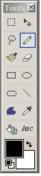

Tools Window
|
 The Tools Window is the most basic of all the other windows. It is here that you can do the most intricate alterations to the canvas. This window is closeable and moveable. If it is not currently on the screen, you can display it using the menu bar option Window-->Tools. The Tools Window will start off as being docked to the leftmost side of the Paint.NET working window. If you want to move it, you can just click and drag the window by using the title bar. Please follow this link: Common Tools to learn more about each individual tool. |